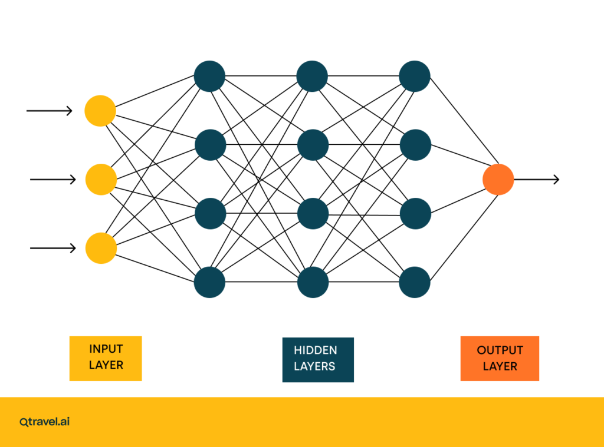

What is AI?
Artificial Intelligence (AI) is a field of computer science that builds systems capable of performing tasks which usually require human intelligence, such as learning, reasoning, pattern recognition, and decision-making. However, there is a lot of controversy surrounding its use - many feel that it's damaging more livlihoods than it's helping.
How does it work?
Most AI models are typically based on neural networks, which are themselves based on matrix multiplication, as well as vector methods. Even LLMs eventually come down to these systems, through the representation of words as vectors. These vectors are used to interpret input and generate outputs.

What's wrong with it?
- Inaccuracies
- A lot of the time, AI generated content will just be plain wrong. A lot of people find this very frustrating, particularly when doing stuff like coding. As well as this, it's a bit worrying to see AI tools being used in weapons continuing to make mistakes
- Job losses
- AI has caused many many job losses, across many sectors. Typically, large companies will lay off hundreds or thousands of people with the intention of using AI to replace them. However, someone has to operate/supervise this AI so not only do many people lose their jobs but those who keep them get an increased workload for the same pay.
What can it do for us?
- Medical use
- AI is very powerful for appilcations such as pattern recognition. This is very helpful in a medical field as it can be fed on medical data and diagnoses to train it to predict medical conditions based on prior information. This is very helpful as it means that diseases can be recognised and prevented before they appear. As well as this, it can be used in recognising already existing conditions (such as tumours), which is a very powerful tool for diagnosing patients.
- Maths and science
- AI has a very strong analytical capability. This can be applied in fields such as maths and science. For example, it recently solved the Navier-Stokes problem (although it's disputed by some whether it was AI). As well as this, it has a lot of possible applications in fields such as chemical and genetic engineering.